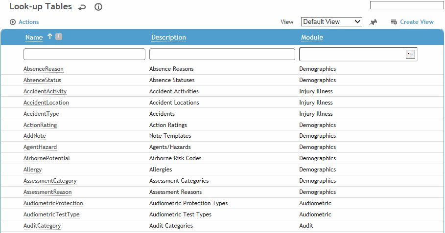
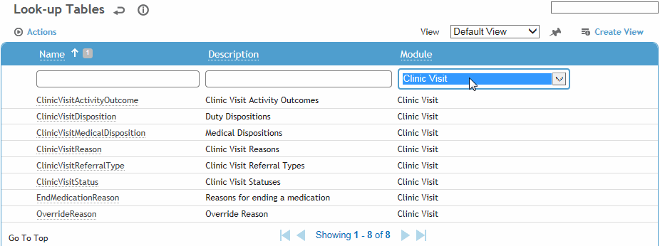

Cority uses look-up tables to store information needed to populate lists. Some look-up tables will have been set up for you prior to Cority implementation at your site, and others must be set up by you or someone at your company. The look-up tables that are used by each module are identified in each module’s chapter. To see the tables, click Look-up Tables in the Administrator menu.

Tables are listed in alphabetical order, and include the module they are used by. Tables used by two or more modules are listed under Demographics. To quickly move to a particular table in the list, enter one or more letters followed by an asterisk in the Description field and press enter. To see just the tables for a particular module, click the arrow at the top of the Module column.

When you create a custom view for a look-up table or Employee table, the second and third columns are combined and used as the field value when selected in a look-up field on a form, in the format “second column value (third column value)”. For example, if a custom view exists on the Agent Hazard look-up table with the fields Agent Code, Agent Description, and Agent CAS Number, when you select an agent on a form via this custom view the field will show “Agent Description (Agent CAS Number)”, e.g. “Nitrous oxide (10024-97-2)”.